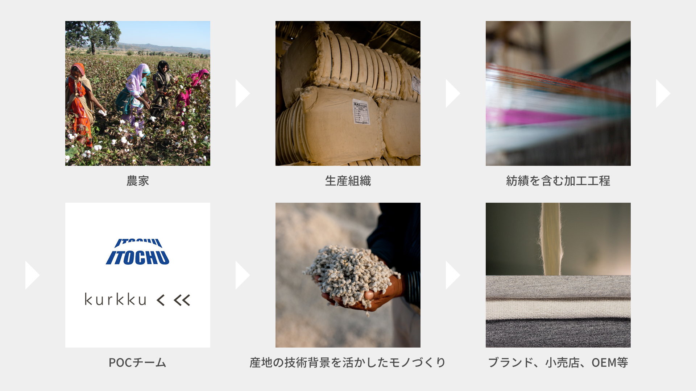
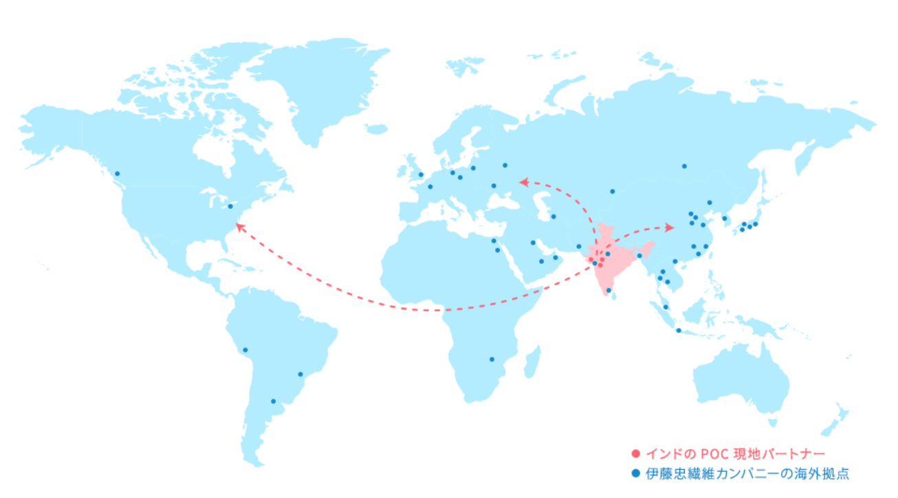

What POC can make changes
① Supporting Expansion of Organic Cotton Supply
In recent years, while demand for organic cotton by consumers has been increasing, production has been declining, and we have not been able to keep up with the demand. Organic cotton still accounts for less than 1% of total cotton production. Therefore, we will provide the necessary resources for organic cultivation to producers and provide them with education so that more cotton farmers can start organic cultivation, aiming to increase the supply.In addition, POC ensures consistent production by consolidating the needs of brands and retailers, thereby ensuring a stable supply to customers.
Unprecedented scare of fake organic cotton in India.In 2020, there was a disappointing incident about organic cotton. A new study finds that 20,000 tons of cotton has been fraudulently certified and distributed via forged certificates using the Export Development Administration of Agricultural and Processed Foods (APEDA) template. Following the revelation, GOTS, the international certification body for organic cotton, imposed a ban on 11 companies and terminated contracts with 1 certification body.
② Provision of transparency and traceability
where do the things we usually wear come from, how do we make them? POC is to visualize the current situation where it is difficult for consumers to see the producers.POC purchases only cotton from farmers who belong to the local farmers' association, and spinning it in a designated factory, so the entire process can be traced back from the pre-organic cotton farmers to the end product (brand). The risk of mixing with normal cotton is minimized with POC.
③ Expanding into markets through supply chains
POC connects organic cotton producers with global brands and retailers. We will also expand our partnership with Indian cotton merchants to increase our supply.As mentioned in (2) above, we ensure the traceability of products distributed from Indian producers via us.In addition to ITOCHU Textile Company's global network and supply chain management know-how, the pre-organic cotton program is designed to meet the needs of brands and retailers in all regions by utilizing the technical background of production areas in Japan.
④ Good impact on the environment
Growing up in the same way as organic cotton, POC does not use chemical fertilizers or pesticides to protect soil health and reduce the amount of water used.Since GHG emissions from soil are also low, the shift to organic cultivation of ordinary cotton, which exists today, is expected to have a large environmental impact. (1)
